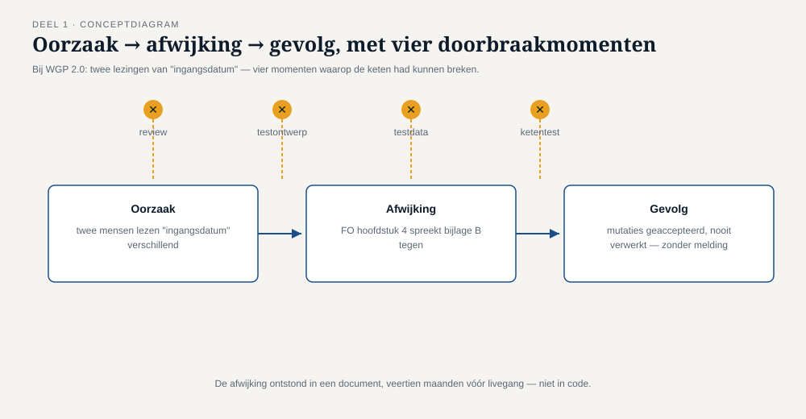
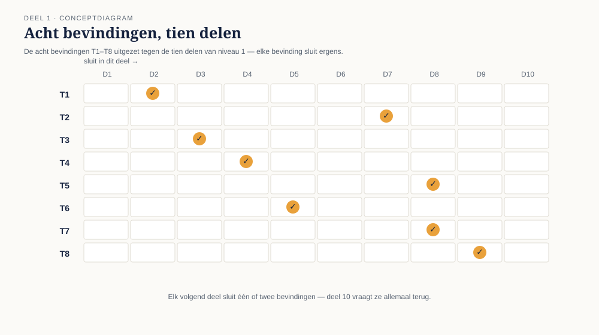

Deel 1 — Waarom getest wordt
Slidedeck · Ductus-cursus Testen en Kwaliteitsborging · niveau 1 · deel 1 van 30 · 40 slides
Slidetypen conform de Ductus-sjabloonfuncties: titleSlide, sectionSlide, bulletsSlide, statementSlide, quoteSlide, tableSlide, figureSlide, opdrachtSlide.
Slide 1 — titleSlide
Waarom getest wordt Deel 1 · Niveau 1 Fundament Cursus Testen en Kwaliteitsborging
Slide 2 — bulletsSlide
Wat we vandaag doen
- Eén document lezen dat alles klopt en niets waard is
- Wat testen is — en vooral wat het niet is
- Oorzaak, afwijking, gevolg — precies taalgebruik
- Zeven principes die zeven denkfouten corrigeren
- Acht bevindingen die de rest van dit niveau dragen
Slide 3 — statementSlide
Zou jij dit systeem live laten gaan?
(handen omhoog — de docent noteert de verhouding)
Slide 4 — quoteSlide
Uitgevoerde testgevallen: 312 Geslaagd: 306 (98,1%) Gefaald: 0 Niet uitgevoerd: 6 (geen testdata beschikbaar) Open bevindingen: 6, alle prioriteit laag Advies: gereed voor productie
— Acceptatietestrapport WGP 2.0, pagina 2
Slide 5 — figureSlide

Onderschrift: veertien pagina's, vier cijfers, één advies.
Slide 6 — opdrachtSlide
Opdracht 1.1 — Lees het rapport nog een keer
Vijf uitspraken uit het rapport. Per uitspraak: feitelijk juist / feitelijk onjuist / juist maar misleidend
20 minuten, individueel.
Slide 7 — statementSlide
Elk cijfer in dat rapport klopt.
31 uur na de livegang stond het systeem uit.
Slide 8 — sectionSlide
1. Wat testen is
Slide 9 — statementSlide
Testen levert informatie over kwaliteit, zodat een ander een besluit kan nemen.
Geen zekerheid. Geen oordeel.
Slide 10 — figureSlide

Onderschrift: de tester is verantwoordelijk voor de eerste drie schakels.
Slide 11 — bulletsSlide
Testdoelen verschillen
- Fouten vinden
- Vertrouwen opbouwen
- Informatie leveren voor een besluit
- Fouten voorkomen (vroeg meelezen)
- Voldoen aan eisen van contract, wet of toezicht
Welk doel diende de WGP 2.0-test werkelijk?
Slide 12 — statementSlide
Wie op de makkelijke plek zoekt, krijgt precies de geruststelling waar hij om vroeg.
Slide 13 — tableSlide
Vier begrippen die door elkaar lopen
| Begrip | Vraag | Wie |
|---|---|---|
| Testen | Gaat er iets mis, en wanneer? | tester |
| Debuggen | Waarom gaat het mis, en hoe herstel ik het? | ontwikkelaar |
| Kwaliteitsbeheersing | Is dit product goed genoeg? | productgericht |
| Kwaliteitsborging | Hoe voorkomen we slechte producten? | procesgericht |
Slide 14 — figureSlide

Slide 15 — opdrachtSlide
Opdracht 1.7 — Categoriseer
Vijf situaties: T · D · QA · QC
10 minuten, individueel. Daarna plenair.
Slide 16 — sectionSlide
2. Oorzaak, afwijking, gevolg
Slide 17 — bulletsSlide
Drie woorden, drie momenten
- Oorzaak — een mens vergist zich of begrijpt iets verkeerd
- Afwijking — het resultaat daarvan in een werkproduct
- Gevolg — wat zichtbaar wordt als het systeem draait
Een afwijking hoeft nooit een gevolg te krijgen. Een gevolg kan optreden zonder afwijking.
Slide 18 — tableSlide
WGP 2.0 ontleed
| Oorzaak | Twee mensen lazen "ingangsdatum" verschillend |
| Afwijking | Hoofdstuk 4 en bijlage B spraken elkaar tegen |
| Gevolg | Terugwerkende mutaties geaccepteerd, nooit verwerkt — zonder melding |
De afwijking ontstond in een document, veertien maanden voor de livegang.
Slide 19 — figureSlide

Slide 20 — figureSlide

Onderschrift: ontwerp week 3 · bouw week 40 · acceptatietest week 71 · productie week 76.
Slide 21 — bulletsSlide
Twee kanttekeningen bij "vroeg is goedkoper"
- Het is een tendens, geen natuurwet — gebruik geen factoren die je niet kunt onderbouwen
- Het argument wordt misbruikt om oneindig voorwerk te rechtvaardigen
De vraag is nooit hoe vroeg testen we? maar welke onzekerheid ruimen we wanneer op?
Slide 22 — sectionSlide
3. Zeven principes
Slide 23 — statementSlide
1. Testen toont de aanwezigheid van afwijkingen aan, nooit de afwezigheid.
98,1% geslaagd ≠ 98,1% goed.
Slide 24 — statementSlide
2. Uitputtend testen is onmogelijk.
Acht velden × tien waarden = 10⁸ combinaties. Eén seconde per test = ruim drie jaar.
Slide 25 — statementSlide
4. Afwijkingen clusteren.
Zes niet-uitvoerbare testgevallen, allemaal in hetzelfde gebied. Dat is geen toeval, dat is een signaal.
Slide 26 — statementSlide
5. Tests slijten.
Veertien maanden groen betekent meestal niet dat er niets fout gaat.
Slide 27 — statementSlide
7. De afwezigheid van fouten is een misvatting.
Nul openstaande bevindingen, en 30% van de deelnemers belt alsnog.
Slide 28 — bulletsSlide
En de twee vanzelfsprekende
- 3. Vroeg testen bespaart tijd en geld — met de nuance van slide 21
- 6. Testen is contextafhankelijk — wat er misgaat als het misgaat bepaalt hoe je test
Een pensioenaanspraak is niet terug te draaien. Een productafbeelding wel.
Slide 29 — figureSlide

Slide 30 — opdrachtSlide
Opdracht 1.4 — Principes herkennen
Vijf situaties, koppel elk aan één principe.
15 minuten, individueel.
Slide 31 — sectionSlide
4. De acht bevindingen
Slide 32 — tableSlide
T1 t/m T8 — het skelet van niveau 1
| # | Bevinding | Sluit in |
|---|---|---|
| T1 | Geen traceerbaarheid naar een testbasis | deel 2 |
| T2 | Dekking geteld, niet gewogen naar risico | deel 7 |
| T3 | Testbasis veertien maanden oud | deel 3 |
| T4 | Geen statische toetsing | deel 4 |
| T5 | Testomgeving week af van productie | deel 8 |
| T6 | Testdata zonder randgevallen | deel 5 |
| T7 | Ketenpartner niet betrokken | deel 8 en 10 |
| T8 | Exitcriterium was een percentage | deel 9 |
Slide 33 — figureSlide

Slide 34 — statementSlide
Het exitcriterium is gehaald.
Volledig, aantoonbaar, zonder enige overtreding.
Een proces kan correct doorlopen zijn en toch niets waard.
Slide 35 — opdrachtSlide
Opdracht 1.5 — Welke twee wogen het zwaarst?
Kies twee bevindingen uit T1–T8, onderbouw, en verdedig tegen de groep die anders koos.
30 minuten, groepjes van drie.
Slide 36 — bulletsSlide
TMAP-lens
- Daar heet het: built-in quality, verantwoordelijkheid van het hele team
- Wezenlijk anders: TMAP begint bij bedrijfswaarde (VOICE), niet bij de eis
WGP 2.0 voldeed aan de eis en leverde de waarde niet.
Deel 11 behandelt TMAP integraal.
Slide 37 — bulletsSlide
Examenaansluiting — CTFL hoofdstuk 1
- Testdoelen, testen versus debuggen
- Oorzaak–afwijking–gevolg
- Testen binnen kwaliteitsmanagement
- De zeven principes
Let op: principe 1 ≠ principe 7. Meest gemaakte examenfout.
Deze cursus bereidt voor; zij vervangt het officiële examenmateriaal niet.
Slide 38 — statementSlide
Zou jij dit systeem live laten gaan?
(dezelfde vraag als slide 3 — hoe staat het bord er nu bij?)
Slide 39 — bulletsSlide
Huiswerk
- Opdracht 1.6 — herschrijf de conclusie van het rapport, max. 150 woorden (verplicht; deel 9 bouwt erop voort)
- Opdracht 1.8 — welke bevindingen T1–T8 herken je in je eigen organisatie? (startpunt van deel 2)
- Oefentoets, tien vragen
Slide 40 — statementSlide
Volgende keer: het testproces
en de vraag die T1 sluit — hoe weet je wat je niet hebt getest?